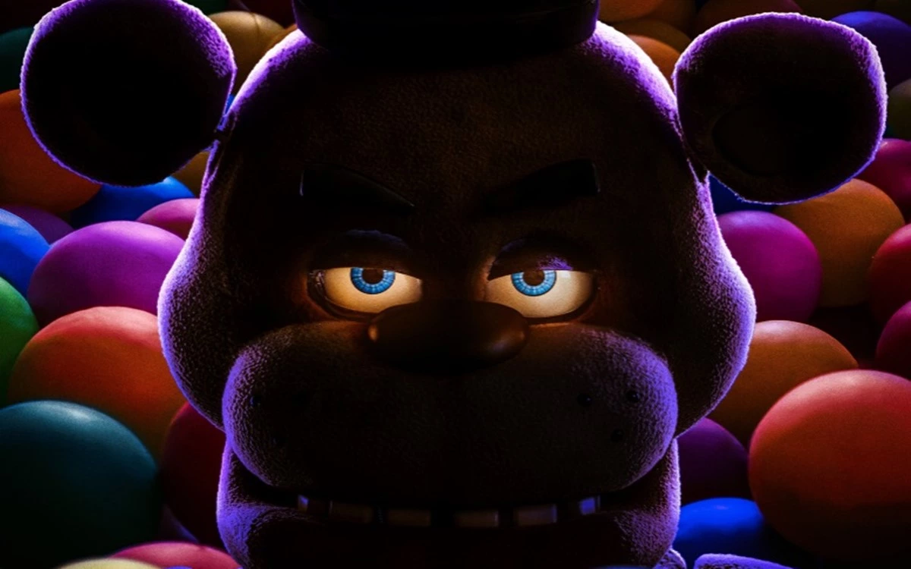

O Lançamento de "Five Nights at Freddy's" é recorde de bilheteria, mais não recebe uma boa avaliação.
O enorme sucesso de bilheteria de Five Nights At Freddy's - O Pesadelo Sem Fim deixou claro que o público ignorou as críticas horríveis à adaptação do famoso videogame. Com as avaliações negativas da imprensa, era de se esperar que os fãs saíssem insatisfeitos das salas de cinema, mas esse não foi o caso. Público fiel ao game dizem ser uma "obra prima".
Ler mais
O retorno de Katniss? Jennifer Lawrence revela que aceitaria voltar para a franquia Jogos Vorazes.
A Cantiga dos Pássaros e das Serpentes chega em breve aos cinemas brasileiros, como o quinto filme da franquia Jogos Vorazes, baseada nos livros de Suzanne Collins. Desta vez, acompanhamos a personagem Lucy Gray, interpretada por Rachel Zegler, que assume o protagonismo antes defendido por Jennifer Lawrence e sua icônica Katniss Everdeen.
Ler mais
Kevin Feige desmente rumores sobre retorno dos Vingadores originais, mas cita projeto secreto com estrela da Marvel
Na última semana, um relatório da Variety revelou uma série de questões envolvendo o presente e o futuro do Universo Cinematográfico da Marvel. Entre os temas citados pelo veículo, além da problemática envolvendo Jonathan Majors e as expectativas com As Marvels, há rumores de que o estúdio tem planos para trazer super-heróis mortos na Saga do Infinito de volta às telonas.
Ler mais